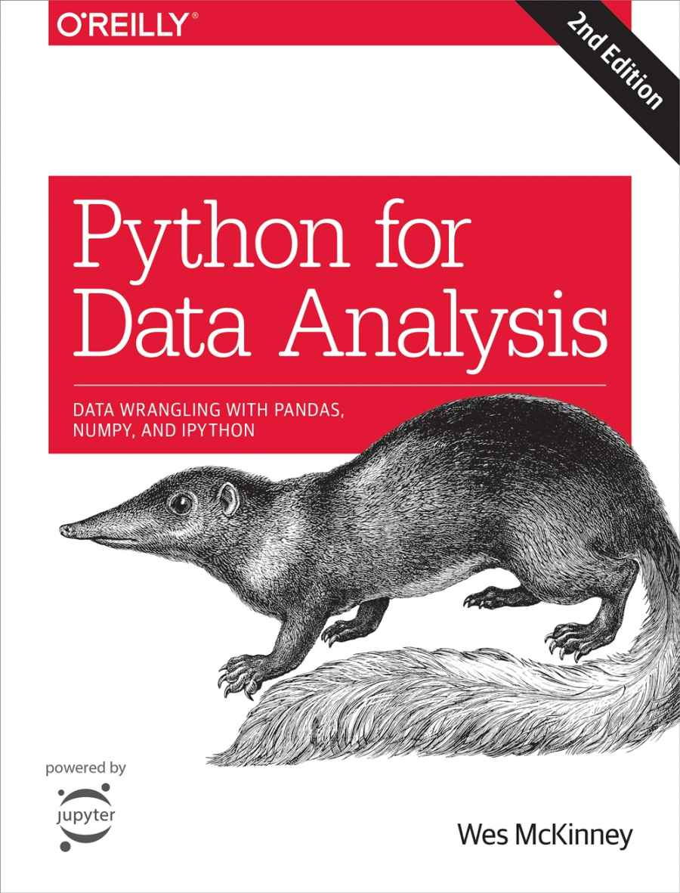

class: center, middle # Introduction to Pandas Basics ### Hongtao Xiao ### 2018.9 --- ## What CANNOT be covered in half an hour?  --- ## What CAN be covered? * basic data structures * basic operations --- ## Further reading * [Official documentation](http://pandas.pydata.org/pandas-docs/stable/) --- ## Questions? ### github: [jeffhongxiao](https://github.com/jeffhongxiao)